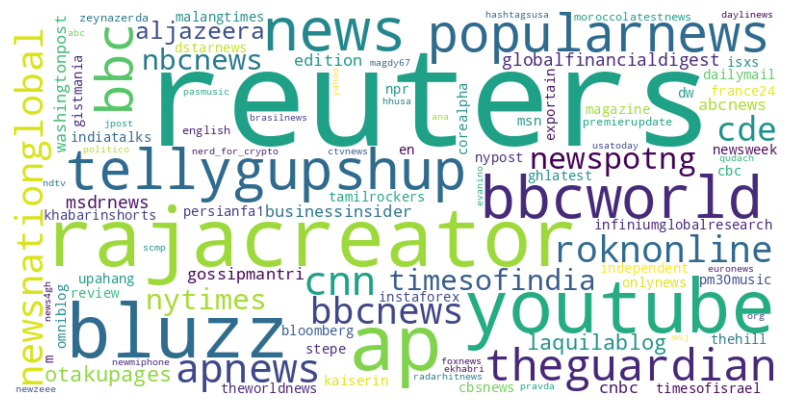

Exploratory Data Analysis
Preprocessing and Data Dictionary
In the Submissions dataset :- Author : Denotes who posted the submission.
- Created_utc : Displays the date and time a submission was posted. Time is in coordinated universal time.
- ID : The unique identifier of each Submission.
- Source : Contains the source extracted form news’ URL.
- Score : The Karma score awarded to each post
- Subreddit : This shows which subreddit the submission was posted to.
- Author : The user who posted the comment.
- Created_utc : Displays the date and time the comment was posted. Time is in coordinated universal time
- body : The text in the comment.
- ID : The unique identifier of each comment.
- Score : Contains the karma score (number of up and down votes) a submission gets.
We created a misinformation classifier from the body variable to show if the comment contained a misinformation phrase like “fake news” or “propaganda.” We also used the created_utc variable to get the year and day of the week a submission or comment was made.
External data: We plan on using vaccination data from Google linked below. Google COVID-19 Vaccination Data
Analyzing Weekly Activity Trends
In this section, we delve into understanding the patterns of user engagement on Reddit. We begin by examining the distribution of activity across different days of the week, extracted from the DateTime variable. By grouping the data based on these days, we quantify the frequency of user interactions, both in terms of comments and submissions. The insights derived from this analysis are visually represented through a bar graph in Figure 2.1 and Figure 2.2.
Figure 2.1: Number of submissions per day of the week from 2021-2023
As shown in Figure 2.1, the trend for submissions exhibits a significant dip during the weekends. This suggests that users are less likely to initiate new threads or topics on Saturday and Sunday.A potential factor contributing to this weekend slump could be the downtime in news cycles, as journalists and news outlets typically slow down on these days.Interestingly, Thursday is the busiest day for submissions, contrary to the intuitive expectation that Monday would start the week with a surge.

Figure 2.2: Number of comments per day of the week from 2021-2023
Figure 2.2 depicts a different dynamic for comments, with activity gradually increasing from Monday, reaching a zenith on Thursday. This progressive increase could indicate users’ growing engagement with content as the week unfolds. Despite both submissions and comments peaking on Thursday, only comments display a steady climb throughout the weekdays.
When we synthesize the data from submissions and comments, a compelling narrative about user engagement emerges. Thursday stands out as a pinnacle of activity for Reddit, with both submissions and comments reaching their highest levels. This indicates that Thursdays are not just about new content being created but also about the peak in interactions with existing threads. The pattern across the week shows more engagement with ongoing discussions rather than starting new ones, especially as the week progresses.
Analyzing Post Frequency by Year
In this analysis, we investigate the disparity in the number of posts across different years. Utilizing the DateTime variable, we extract the year component to group the data accordingly. The findings are presented in two separate tables: Table 2.1 for submissions and Table 2.2 for comments.
╒════════╤═════════╕
│ year │ count │
╞════════╪═════════╡
│ 2021 │ 998335 │
│ 2022 │ 732024 │
│ 2023 │ 116779 │
╘════════╧═════════╛ Table 2.1: Submissions Per Year
╒════════╤══════════╕
│ year │ count │
╞════════╪══════════╡
│ 2022 │ 27272489 │
│ 2021 │ 19060400 │
│ 2023 │ 3637011 │
╘════════╧══════════╛ Table 2.2: Comments Per Year
The analysis of post frequency by year reveals intriguing trends. While there is a notable decline in submissions from 2021 to 2023, the number of comments exhibits a contrasting pattern, with a significant increase observed from 2021 to 2022 followed by a decline in 2023. This divergence suggests a potential shift in user behavior towards increased engagement with existing content rather than generating new posts. Further investigation into the underlying factors influencing this trend could provide valuable insights into evolving user preferences and platform dynamics.
Assessing Percentage of Comments with Fake News Indicators
To evaluate the prevalence of fake news indicators in comments, we employed regex to detect phrases such as “fake news,” “bullshit,” or “propaganda.” Subsequently, a fake news indicator column was created to denote the presence of these phrases in comments. Grouping the data by this indicator column, we tallied the counts and visualized the findings in a chart. Among the total comments analyzed, 407,621 were flagged as containing fake news indicators, while the majority, comprising 49,562,279 comments, were deemed free from such indicators. This signifies that approximately 0.8% of comments were identified as potentially containing fake news elements. Further exploration into the context and implications of these comments could offer valuable insights into the dissemination of misinformation within online communities.

Figure 2.3: Comments containing Misinformation Indicators from 2021-2023
Analyzing User Activity
As we delve into the dynamics of user interactions within the news-centric communities on Reddit, we encounter some intriguing patterns. The subreddit under examination boasts 31.5 million subscribers. However, a closer inspection reveals that in the past year, approximately 27,000 unique users have made submissions, and around 1.2 million have commented.
Figure 2.4: Top 10 Users Post Comparison for News and World News Subreddits
╒══════════════════════╤════════════════════╕
│ author │ submission_count │
╞══════════════════════╪════════════════════╡
│ rajacreator │ 68724 │
│ popularnewsindia │ 30485 │
│ newsnationglobal │ 17184 │
│ roknonline │ 15960 │
│ Som2ny-Official │ 14037 │
│ The_Dispatch │ 13240 │
│ First-Situation-1384 │ 12811 │
│ AgeCompetitive4420 │ 11398 │
│ tellygupsgup_redit │ 9747 │
│ HindustanNewsBharat │ 9550 │
╘══════════════════════╧════════════════════╛ Table 2.4: Top 10 Active User in News Subreddit
╒══════════════════╤════════════════════╕
│ author │ submission_count │
╞══════════════════╪════════════════════╡
│ harryg888 │ 57339 │
│ theworldnnews │ 5509 │
│ AdrienSergent │ 5139 │
│ Infoseven7 │ 5107 │
│ DoremusJessup │ 3999 │
│ shubhamk1995 │ 3532 │
│ USNEWS01 │ 3027 │
│ Efficient-Ad9226 │ 2785 │
│ radarhitnews │ 2625 │
│ nkonsontv │ 2577 │
╘══════════════════╧════════════════════╛ Table 2.5: Top 10 Active User in World News Subreddit
The analysis of the two tables indicates a notable prevalence of [deleted] accounts among the top 10 active users in both the “news” and “worldnews” subreddits. Additionally, it reveals a significant disparity in posting frequency between the two categories. Specifically, the top 10 users in the “news” subreddit demonstrate considerably higher posting rates, with counts exceeding 9,000, compared to the “worldnews” subreddit where the counts remain above 2,000. This discrepancy suggests a potential discrepancy in user engagement and interest levels between the two thematic categories, highlighting the diverse participation patterns within the Reddit community across different topics.
Source Analysis
In this extensive analysis, we aim to understand the influence of various news sources within the Reddit ecosystem. To achieve this, we extract the domain information from each submission’s URL and aggregate the data to evaluate two main metrics: the frequency of posts from each news source and the cumulative karma scores these posts have received.
This dual-faceted approach enables us to not only see which news sources are most frequently posted but also which ones resonate the most with the Reddit community, as reflected by their karma scores. The results are encapsulated in two distinct tables.

Figure 2.: Top 10 Users Post Comparison for News and World News Subreddits
To visually represent the frequency of posts by these news sources, we created a word cloud, as shown in the uploaded image. This illustration vividly displays the prominence of certain names, with ‘Reuters’ and ‘BBCWorld’ appearing more prominently, indicating a higher frequency of posts from these sources compared to others like ‘rajacreator’ or ‘tellygupshup’.
╒══════════════╤═════════════╤═══════════════╤══════════════╕
│ source │ frequency │ karma_score │ score rank │
╞══════════════╪═════════════╪═══════════════╪══════════════╡
│ Reuters │ 319453 │ 327004 │ 43 │
│ rajacreator │ 68753 │ 68753 │ 45 │
│ AP │ 63886 │ 67112 │ 46 │
│ bluzz │ 57339 │ 57337 │ 47 │
│ reuters │ 39747 │ 34230489 │ 1 │
│ youtube │ 38580 │ 38472 │ 48 │
│ news │ 34528 │ 13992972 │ 10 │
│ BBCWorld │ 33884 │ 34733 │ 49 │
│ tellygupshup │ 31600 │ 31596 │ 50 │
│ popularnews │ 30492 │ 30491 │ 51 │
╘══════════════╧═════════════╧═══════════════╧══════════════╛ Table 2.5: Top 10 Sources by Frequency
Table 2.5 lists the top 10 sources by the frequency of posts. Reuters takes the lead in the number of posts, with a significant presence on the platform. However, when we consider the karma scores, the same source shows a dramatic contrast in its two entries, one with a high karma score and another much lower, indicating perhaps a discrepancy in the content’s reception or the presence of multiple accounts associated with the source.
╒═════════════════╤═════════════╤═══════════════╤══════════════════╕
│ source │ frequency │ karma_score │ frequency rank │
╞═════════════════╪═════════════╪═══════════════╪══════════════════╡
│ reuters │ 39747 │ 34,230,489 │ 5 │
│ cnn │ 20535 │ 26,569,966 │ 13 │
│ theguardian │ 24648 │ 24,930,338 │ 12 │
│ apnews │ 20407 │ 23,547,749 │ 14 │
│ nbcnews │ 10907 │ 20,146,178 │ 21 │
│ cnbc │ 7391 │ 16,038,330 │ 31 │
│ businessinsider │ 6772 │ 15,497,047 │ 33 │
│ bbc │ 29034 │ 15,373,615 │ 11 │
│ cbsnews │ 5514 │ 14,944,943 │ 41 │
│ news │ 34528 │ 13,992,972 │ 7 │
╘═════════════════╧═════════════╧═══════════════╧══════════════════╛ Table 2.6: Top 10 Sources by Karma score
Table 2.6, on the other hand, ranks the top 10 sources by the karma score. This table reveals that while Reuters may not have the highest posting frequency among the top sources, it garners the highest cumulative karma, suggesting a strong engagement from the Reddit community with the content provided by this source.
These analyses not only highlight the most active news sources but also offer insights into the quality of engagement that different sources inspire among Redditors. Such data is invaluable for understanding the landscape of news consumption and dissemination on one of the world’s largest social platforms.